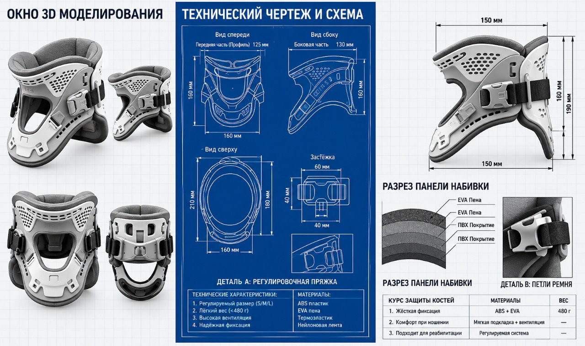
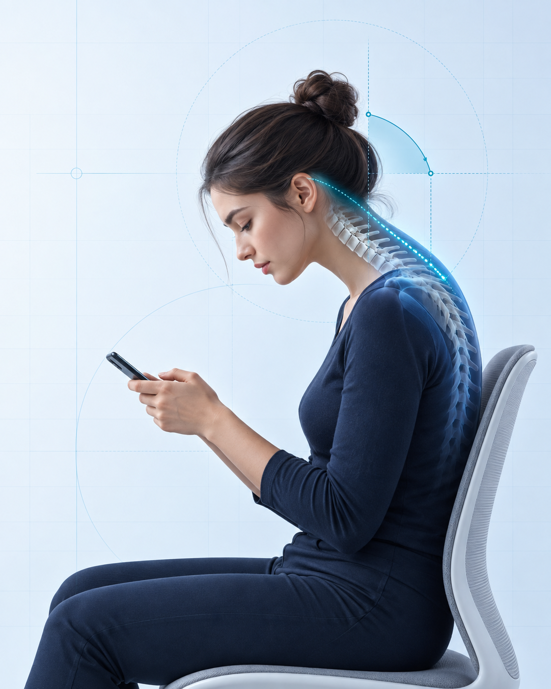
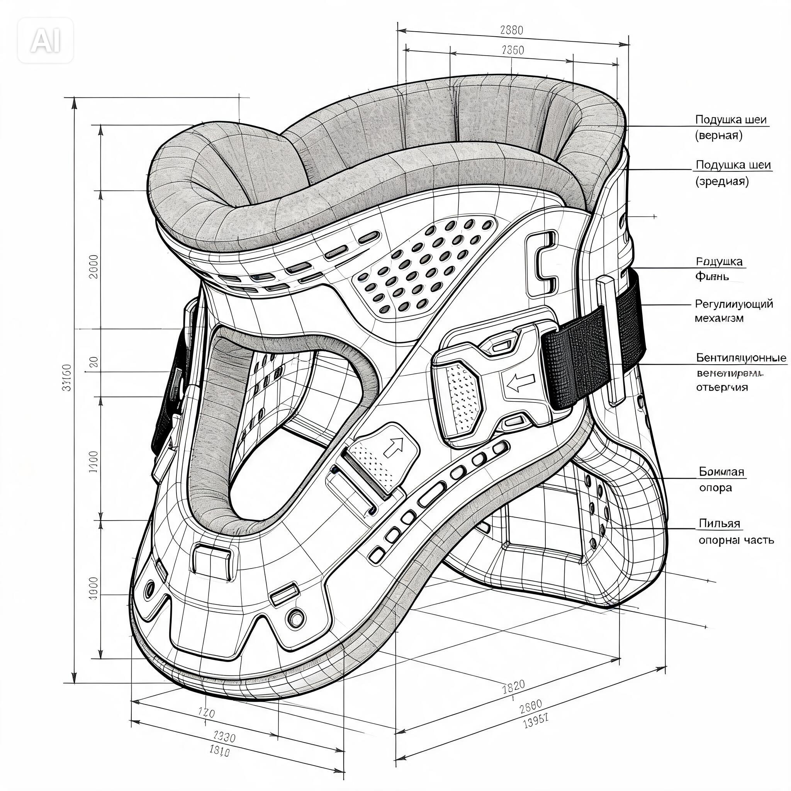

01
Мягкое ограничение
Конструкция даёт тактильную подсказку, когда наклон становится чрезмерным.
Держи голову выше —
работай комфортнее
Лёгкое механическое устройство для контроля положения головы без электроники.

01 / ПРОБЛЕМА

При долгой работе с гаджетами голова незаметно наклоняется вперёд.
Дольше держать позу становится сложнее.
Мышцы шеи и плеч работают интенсивнее.
Фокус на задаче уступает желанию сменить позу.
02 / НАШЕ РЕШЕНИЕ
ErgoNeck мягко ограничивает чрезмерный наклон головы и помогает сохранять более комфортное положение.
Конструкция даёт тактильную подсказку, когда наклон становится чрезмерным.
Наденьте и настройте устройство менее чем за 30 секунд.
Механический принцип — никаких датчиков, приложений и зарядки.
03 / ПРЕИМУЩЕСТВА
Работает всегда. Не требует зарядки, синхронизации или обслуживания.
Простая конструкция и доступные материалы удерживают цену прототипа в пределах бюджета.
Лёгкие гипоаллергенные материалы в зонах контакта с кожей.
Ремни и высота опоры настраиваются индивидуально.
Минимум деталей, понятная сборка и быстрый старт.
04 / КАК ЭТО РАБОТАЕТ
Расположи мягкую опору вокруг шеи.
Настрой ремни и высоту опоры под себя.
Пользуйся гаджетом в более осознанном положении.
05 / ДЛЯ КОГО
Учёба, чтение и онлайн-задания
↗Конспекты, лекции и подготовка
↗Задачи на телефоне и планшете
↗Все, кто долго пользуется гаджетами
↗06 / ПРОТОТИП

Концептуальная модель. Конструкция и размеры будут уточнены после испытаний.
REV. 01 / 2026ERGO / NECK / PROJECT
ErgoNeck делает работу с гаджетами более осознанной и комфортной.